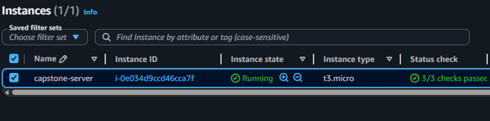
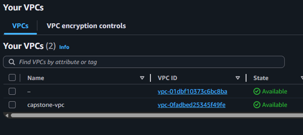
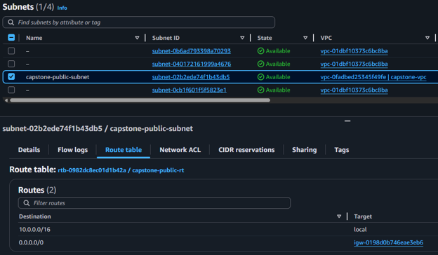
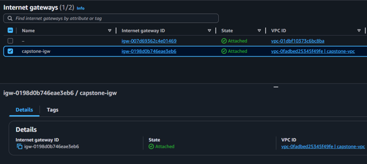
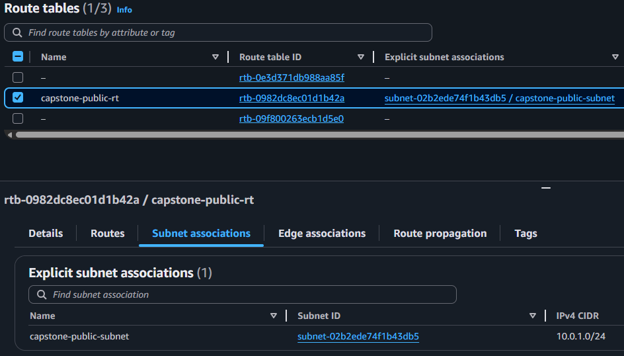
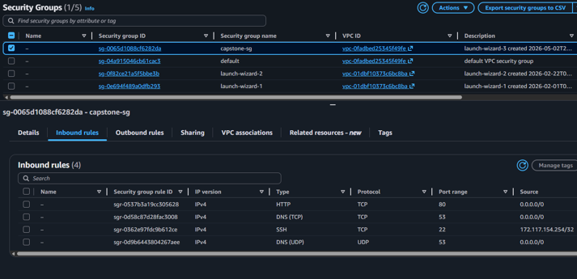
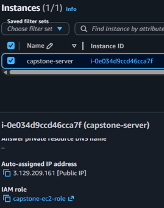
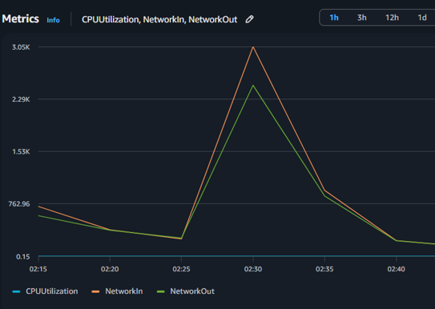
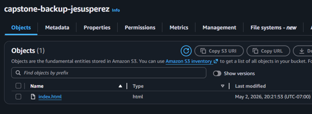
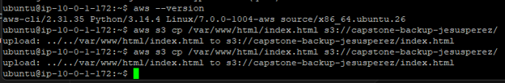

Cloud InfrastructureAmazon Web ServicesNetworkingLinux · EC2
AWS Cloud Infrastructure & Web Server Deployment
Cloud Computing Project — Amazon Web Services
TypeCloud Infrastructure Project
PlatformAmazon Web Services
ServicesVPC · EC2 · S3 · IAM · CloudWatch · Security Groups
Project Overview
This project focused on designing and deploying a functional cloud-based web server environment using Amazon Web Services. The goal was to build a small but complete cloud infrastructure setup that demonstrated networking, compute, security, monitoring, and backup fundamentals.
I created a custom VPC, configured a public subnet, connected the network to the internet through an Internet Gateway, launched a Linux EC2 instance, hosted a basic web page, secured access with security groups and IAM, monitored server activity with CloudWatch, and backed up website files to Amazon S3 using the AWS CLI.
EC2 Instance — Running

The Problem
Cloud applications require more than just a server. They need a properly designed network, controlled access, monitoring, and a backup strategy. The challenge was to understand how different AWS services work together to support a secure and accessible web server environment.
Core Question — How can AWS services be combined to deploy, secure, monitor, and protect a basic cloud-hosted web server?
My Approach
I started by creating the network foundation using a custom VPC. Within that VPC, I created a public subnet to host the EC2 instance. I then configured a route table and attached an Internet Gateway so the server could communicate with the public internet.
After the network was configured, I launched a Linux EC2 instance and installed a web server. I deployed a basic HTML page and verified that the server was reachable through its public IP address.
To secure the environment, I configured security group rules to allow only the necessary types of traffic, such as HTTP for web access and SSH for remote administration. I also attached an IAM role to the EC2 instance to support secure access to AWS services without storing credentials directly on the server. Finally, I used CloudWatch to monitor performance metrics and Amazon S3 to store backup copies of the web server files.
Internet│Internet Gateway│Route Table│Public Subnet│EC2 Web Server
CloudWatchS3 Backup
Building the Network Foundation
Amazon VPC
The VPC acted as the private network environment for the project. It allowed me to control where resources were placed and how traffic moved between the server and the internet. This was the first step in building an isolated, configurable cloud network.
VPC Configuration

Public Subnet
The public subnet hosted the EC2 instance and allowed the server to be accessible from a browser through a public IP address. Placing the instance in a public subnet was a deliberate design decision that enabled direct internet connectivity.
Public Subnet

Internet Gateway
The Internet Gateway connected the VPC to the public internet. Without it, the EC2 instance would remain isolated with no path to or from the outside world. Attaching the gateway to the VPC was what made the web server publicly reachable.
Internet Gateway

Route Table
The route table directed outbound and inbound traffic between the public subnet and the Internet Gateway. Configuring the correct routes was essential to ensure traffic flowed properly from the EC2 instance to the internet and back.
Routing Configuration

Deploying the Server
Amazon EC2
The EC2 instance served as the Linux-based web server. After launching the instance into the public subnet, I installed a web server, deployed a basic HTML page, and confirmed the site was reachable by navigating to the instance's public IP address in a browser.
EC2 Instance
Security Controls
Security Groups
Security groups worked as a virtual firewall for the EC2 instance. I configured inbound rules to allow only the traffic needed for the project:
HTTP port 80 — allows web browser access to the hosted page
SSH port 22 — allows secure remote administration of the server
Security Group Rules

IAM Role
I attached an IAM role to the EC2 instance to allow it to securely interact with other AWS services — specifically S3 — without storing access keys directly on the server. This follows AWS best practices for managing permissions in a cloud environment.
IAM Role Attached to EC2

Monitoring & Operations
Amazon CloudWatch
CloudWatch was used to monitor real-time server metrics, giving visibility into how the EC2 instance was performing:
CPU Utilization — tracked processor load over time
Network In — measured inbound traffic to the instance
Network Out — measured outbound traffic from the instance
This gave the deployment a real-world operational layer beyond simply launching a server.
CloudWatch Metrics

Backup & Data Protection
Amazon S3
S3 was used as a backup location for the web server files. An S3 bucket was created to serve as a durable, off-server storage destination for the website content — ensuring the files would be recoverable independent of the EC2 instance.
S3 Backup Bucket

AWS CLI Backup Process
Using the AWS CLI from within the EC2 instance, I copied the website's index.html file directly into the S3 bucket:
This step proved interaction with AWS beyond the console and demonstrated how the IAM role enabled CLI-based service access securely.
AWS CLI Backup Command

Final Result
Successfully deployed a cloud-hosted Linux web server with networking, security, monitoring, and backup functionality using AWS.
The final result was a working AWS cloud environment with a publicly accessible web server. The project demonstrated how core AWS services work together to support a real deployment — this was more than simply launching an EC2 instance. It showed how cloud infrastructure needs to be designed as a connected system.
Live Web Server
Networking — Built a complete VPC with public subnet, Internet Gateway, and route table to connect the server to the internet.
Security — Configured security group rules and attached an IAM role to control traffic and permissions without exposing credentials.
Monitoring — Used CloudWatch to observe real-time CPU and network metrics, adding operational visibility to the deployment.
Backup — Backed up web server files to S3 using the AWS CLI, demonstrating CLI-based interaction with AWS services.
What I Learned
This project gave me practical experience with AWS cloud infrastructure fundamentals and helped me understand how to move from individual cloud services to a complete working environment that supports deployment, security, monitoring, and backup.
VPC & Subnet Design
Internet Gateway & Routing
EC2 Linux Web Server
Security Group Rules
IAM Role Management
CloudWatch Monitoring
S3 Backup Storage
AWS CLI Operations
End-to-End Cloud Deployment
Explore More Projects
View the full portfolio to see other cloud, data, and analytics projects.